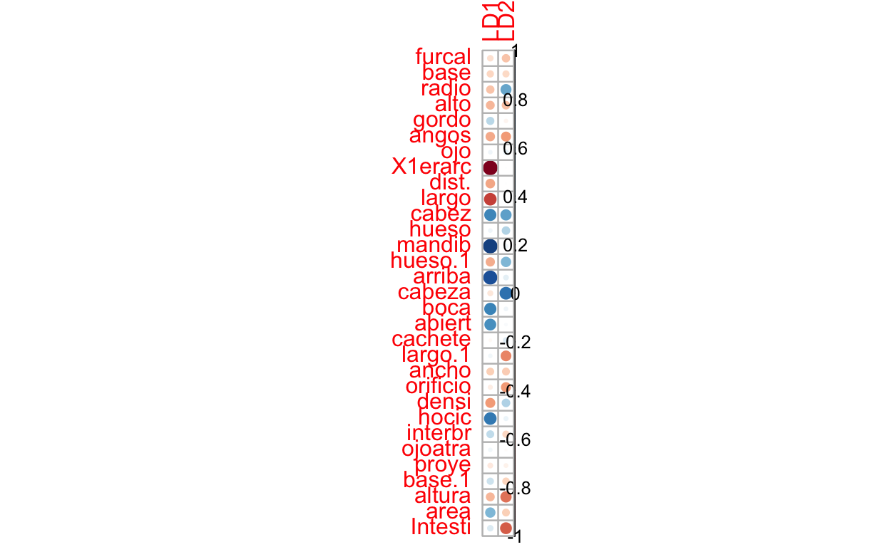
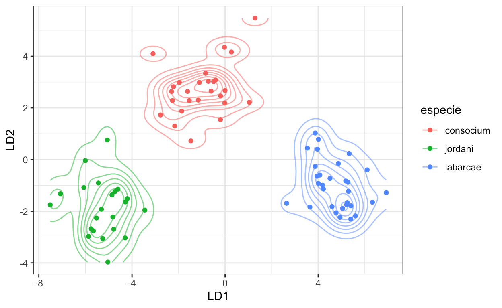
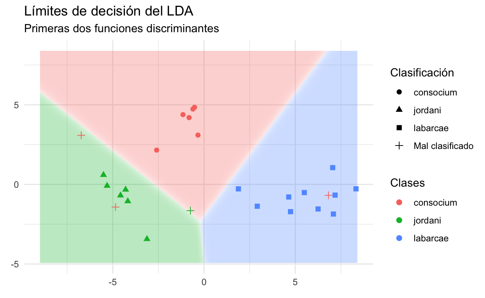

# Tema personalizado
blank_theme <- function(aspect.ratio = 1/1.61){
theme(panel.grid.minor = element_blank(),
panel.grid.major = element_blank(),
panel.background = element_blank(),
axis.line = element_blank(),
aspect.ratio = aspect.ratio,
axis.ticks = element_blank(),
text = element_text(colour = "gray50"), # Eliminar
legend.position = "none"
)
}
El objetivo de un problema de clasificación es utilizar distintas variables (características) para predecir la clase/etiqueta de una instancia. Todas las técnicas de clasificación son técnicas de aprendizaje automatizado; es decir, bajo la definición que dimos al inicio de esta sección, no haremos pruebas de hipótesis de nulidad per-se.
Revisemos entonces algunas técnicas de clasificación utilizando la misma base de datos que utilizamos en el tema de Análisis de Componentes Principales:
library(factoextra)
library(FactoMineR)
#Base de datos completa
x1n <- read.table('data/Medidas.txt', header = TRUE)
#Base de datos sin nombres de especies
x1 <- x1n[ ,2:length(x1n) ]
summary(x1)
furcal base radio alto
Min. :0.2527 Min. :0.07088 Min. :0.04408 Min. :0.05319
1st Qu.:0.2716 1st Qu.:0.09108 1st Qu.:0.06748 1st Qu.:0.06709
Median :0.2753 Median :0.09679 Median :0.07090 Median :0.07140
Mean :0.2757 Mean :0.09645 Mean :0.07048 Mean :0.07116
3rd Qu.:0.2801 3rd Qu.:0.10142 3rd Qu.:0.07430 3rd Qu.:0.07534
Max. :0.3202 Max. :0.11394 Max. :0.08311 Max. :0.09723
gordo angos ojo X1erarc
Min. :0.02679 Min. :0.02996 Min. :0.02142 Min. :0.03485
1st Qu.:0.04139 1st Qu.:0.03465 1st Qu.:0.02451 1st Qu.:0.04332
Median :0.04402 Median :0.03577 Median :0.02673 Median :0.05129
Mean :0.04405 Mean :0.03616 Mean :0.02740 Mean :0.05158
3rd Qu.:0.04680 3rd Qu.:0.03745 3rd Qu.:0.02875 3rd Qu.:0.05899
Max. :0.05859 Max. :0.04727 Max. :0.08191 Max. :0.07738
dist. largo cabez hueso
Min. :0.007179 Min. :0.004202 Min. :0.07311 Min. :0.02857
1st Qu.:0.030485 1st Qu.:0.022402 1st Qu.:0.08476 1st Qu.:0.03236
Median :0.035368 Median :0.029488 Median :0.08951 Median :0.03415
Mean :0.031366 Mean :0.026533 Mean :0.08860 Mean :0.03488
3rd Qu.:0.038824 3rd Qu.:0.034574 3rd Qu.:0.09284 3rd Qu.:0.03582
Max. :0.048008 Max. :0.051843 Max. :0.09815 Max. :0.10411
mandib hueso.1 arriba cabeza
Min. :0.03141 Min. :0.02348 Min. :0.01855 Min. :0.07118
1st Qu.:0.03598 1st Qu.:0.03917 1st Qu.:0.02546 1st Qu.:0.08309
Median :0.03980 Median :0.04413 Median :0.02952 Median :0.08796
Mean :0.03923 Mean :0.04498 Mean :0.02946 Mean :0.08890
3rd Qu.:0.04247 3rd Qu.:0.04995 3rd Qu.:0.03391 3rd Qu.:0.09483
Max. :0.04758 Max. :0.08783 Max. :0.03828 Max. :0.10760
boca abiert cachete largo.1
Min. :0.02828 Min. :0.01810 Min. :0.02938 Min. :0.008724
1st Qu.:0.03476 1st Qu.:0.02348 1st Qu.:0.03911 1st Qu.:0.012881
Median :0.03830 Median :0.02531 Median :0.04308 Median :0.014240
Mean :0.03954 Mean :0.02547 Mean :0.04237 Mean :0.014366
3rd Qu.:0.04368 3rd Qu.:0.02741 3rd Qu.:0.04508 3rd Qu.:0.015936
Max. :0.05552 Max. :0.03248 Max. :0.06553 Max. :0.026475
ancho orificio densi hocic
Min. :0.00274 Min. :0.01968 Min. :0.6990 Min. :0.01546
1st Qu.:0.02663 1st Qu.:0.03741 1st Qu.:0.7782 1st Qu.:0.02491
Median :0.03031 Median :0.04381 Median :0.8451 Median :0.02929
Mean :0.03253 Mean :0.04429 Mean :0.8401 Mean :0.02937
3rd Qu.:0.03447 3rd Qu.:0.05085 3rd Qu.:0.9031 3rd Qu.:0.03294
Max. :0.22628 Max. :0.07390 Max. :1.1139 Max. :0.04922
interbr ojoatra proye base.1
Min. :0.007687 Min. :0.02685 Min. :0.007313 Min. :0.01546
1st Qu.:0.014457 1st Qu.:0.03796 1st Qu.:0.013341 1st Qu.:0.02052
Median :0.015776 Median :0.04050 Median :0.014982 Median :0.02238
Mean :0.016304 Mean :0.04067 Mean :0.016217 Mean :0.02300
3rd Qu.:0.017609 3rd Qu.:0.04256 3rd Qu.:0.016613 3rd Qu.:0.02474
Max. :0.028804 Max. :0.08124 Max. :0.127873 Max. :0.04476
altura area Intesti
Min. :0.02514 Min. :0.001431 Min. :0.1295
1st Qu.:0.03815 1st Qu.:0.006723 1st Qu.:0.1774
Median :0.04422 Median :0.009716 Median :0.1960
Mean :0.04474 Mean :0.010638 Mean :0.1980
3rd Qu.:0.04928 3rd Qu.:0.014274 3rd Qu.:0.2150
Max. :0.08398 Max. :0.027268 Max. :0.3246 Al tratarse de un modelo de aprendizaje automatizado es importante que realicemos nuestra división entrenamiento/prueba para evaluar el ajuste del modelo de clasificación:
pre_pars <- preProcess(train, method = c("center", "scale"))
train_t <- predict(pre_pars, train)
test_t <- predict(pre_pars, test)
El primer modelo con el que trabajaremos es el Análisis de Funciones Discriminantes. En esta técnica se utilizan combinaciones lineales de las variables originales para predecir la clase de una instancia, de modo que se tratarán de encontrar nuevas variables que maximicen la separación entre clases. Para que esta técnica funcione adecuadamente es importante que las medias entre los grupos sean diferentes (podemos aplicar un MANOVA/PERMANOVA previo) y que las dispersiones multivariadas entre los grupos sean relativamente constantes (homocedasticidad multivariada). A partir de lo anterior, es fácil entender a este análisis como una mezcla entre el MANOVA y ACP.
Apliquemos el Análisis Discriminante Lineal. Las probabilidades previas representan la proporción de cada grupo en la base de datos, las medias de los grupos las medias de cada grupo para cada variable, los coeficientes aprendidos por el modelo según los datos de entrenamiento y la proporción de la traza es la proporción de la varianza explicada por cada ecuación discriminante.
lda_mod <- MASS::lda(especie~., data = train_t)
lda_mod
Call:
lda(especie ~ ., data = train_t)
Prior probabilities of groups:
consocium jordani labarcae
0.3333333 0.2820513 0.3846154
Group means:
furcal base radio alto gordo angos
consocium -0.27239867 -0.1611638 0.63378818 -0.2478593 -0.1101955 -0.3803264
jordani 0.36978089 0.3538899 -0.08733179 0.5618379 -0.2484665 0.7205529
labarcae -0.03509381 -0.1198439 -0.48523978 -0.1972031 0.2777115 -0.1987893
ojo X1erarc dist. largo cabez hueso
consocium 0.09264739 0.2144553 0.08430157 0.1499676 0.4599422 0.29791183
jordani -0.13400176 1.1016534 0.41922847 0.7816530 -1.1268342 -0.27518895
labarcae 0.01797355 -0.9937404 -0.38049557 -0.7031841 0.4277285 -0.05638502
mandib hueso.1 arriba cabeza boca abiert
consocium -0.1350847 0.57353663 -0.07769342 0.8313447 -0.07404553 -0.0995833
jordani -1.1191233 0.04897799 -1.07793758 -0.4147328 -0.77198065 -0.6994560
labarcae 0.9377638 -0.53298228 0.85782185 -0.4163614 0.63029194 0.5992399
cachete largo.1 ancho orificio densi hocic
consocium 0.14378260 -0.5532935 -0.2135984 -0.45224471 0.4142481 -0.06895108
jordani -0.06177900 0.3066528 0.4361758 0.40599544 0.2418548 -0.83621678
labarcae -0.07930699 0.2546422 -0.1347437 0.09421543 -0.5363752 0.67298324
interbr ojoatra proye base.1 altura area
consocium -0.2677804 -0.02876978 -0.04894378 -0.26537856 -0.53739820 -0.3555283
jordani -0.1140360 -0.04914858 0.16971481 -0.06077242 0.76287054 -0.3222543
labarcae 0.3157027 0.06097610 -0.08203958 0.27456120 -0.09369329 0.5444443
Intesti
consocium -0.7077703
jordani 0.3010229
labarcae 0.3926508
Coefficients of linear discriminants:
LD1 LD2
furcal 0.028526771 -0.391614791
base -0.209139809 -0.227408806
radio -0.061305903 0.221130285
alto 0.168798201 -0.224047615
gordo 0.634093713 0.209065251
angos -0.758743387 -0.139034212
ojo 0.123364337 -0.007622951
X1erarc -1.997627631 -0.235408480
dist. -0.053552688 -0.147007173
largo -0.046825454 0.389589901
cabez 0.203836005 0.646888740
hueso -0.033319442 0.029258810
mandib 0.918796636 -0.408134075
hueso.1 -0.449510944 0.627524539
arriba 1.125104935 -0.007142905
cabeza -0.493254681 0.948682851
boca -0.163258105 0.388505301
abiert 0.011259084 -0.373641604
cachete 0.234498784 0.639571836
largo.1 -0.637704833 -0.263752163
ancho -0.125785157 0.036733196
orificio 0.008486124 -0.513403328
densi -0.364318989 0.048784740
hocic -0.337415062 0.182388583
interbr 0.532901007 -0.005325388
ojoatra -0.067049359 -0.338594926
proye -0.343082471 -0.025104445
base.1 0.190284049 0.262195074
altura -0.094050504 -0.223923073
area -0.134056419 -0.247898344
Intesti 0.243726491 -0.309536900
Proportion of trace:
LD1 LD2
0.8141 0.1859 Calculemos la correlación entre las variables originales y las dos funciones discriminantes
adj_vals <- as.data.frame(predict(lda_mod, train_t)$x)
adj_vals["especie"] <- train_t["especie"]
corr <- cor(cbind(as.matrix(train_t[,2:32])),
adj_vals[,1:2])
corr
LD1 LD2
furcal -0.13141273 -0.2457755403
base -0.17400395 -0.1640832259
radio -0.24496179 0.4650184432
alto -0.28012983 -0.2547783331
gordo 0.23041878 -0.0444178857
angos -0.32899744 -0.3713816134
ojo 0.05056099 0.0847301419
X1erarc -0.88877042 0.0010272598
dist. -0.33952156 0.0023146043
largo -0.62954328 -0.0008393222
cabez 0.57984949 0.4844248183
hueso 0.05165890 0.2509373702
mandib 0.86274763 0.0581108077
hueso.1 -0.31286833 0.4031217248
arriba 0.80559067 0.0934352143
cabeza -0.10746724 0.6514499754
boca 0.58585544 0.0537619900
abiert 0.54656544 0.0254886911
cachete -0.02567501 0.1112945128
largo.1 0.04970162 -0.4377992219
ancho -0.20721195 -0.2129277982
orificio -0.07004645 -0.3793107927
densi -0.37307363 0.2626291405
hocic 0.62914887 0.0662796506
interbr 0.21102558 -0.1756162121
ojoatra 0.04895785 -0.0137690705
proye -0.09718520 -0.0584316340
base.1 0.17191592 -0.1812602117
altura -0.28301703 -0.4894841705
area 0.40189142 -0.2095533890
Intesti 0.12858271 -0.5474213085corrplot::corrplot(corr, is.corr = T)

Creemos un gráfico de densidad bivariado para conocer la distribución de los grupos en el nuevo espacio:
territ_plot <- ggplot(data = adj_vals,
aes(x = LD1, y = LD2, colour = especie)) +
geom_density_2d(show.legend = T, alpha = 0.5) +
geom_point() +
theme_bw()
territ_plot

Probabilidad de pertenencia de cada individuo a partir de los datos de prueba:
p <- predict(lda_mod, test_t)$posterior
p.acom <- data.frame(especie = test_t$especie, id = rownames(test_t), p = p)
p.acom
especie id p.consocium p.jordani p.labarcae
3 jordani 3 1.576647e-05 9.999842e-01 1.938031e-17
6 jordani 6 1.050268e-04 9.998950e-01 1.299891e-22
7 jordani 7 6.766174e-01 3.205883e-01 2.794340e-03
15 jordani 15 1.525816e-05 9.999847e-01 4.904069e-19
17 jordani 17 1.073441e-05 9.999893e-01 5.255517e-22
19 jordani 19 2.544053e-08 1.000000e+00 9.148421e-14
24 jordani 24 2.620872e-04 9.997379e-01 1.073915e-17
32 labarcae 32 4.402102e-12 3.745222e-26 1.000000e+00
41 labarcae 41 1.234120e-15 4.780119e-29 1.000000e+00
46 labarcae 46 2.105752e-10 2.382699e-22 1.000000e+00
48 labarcae 48 1.982179e-13 1.791345e-33 1.000000e+00
49 labarcae 49 3.036055e-18 1.439861e-32 1.000000e+00
55 labarcae 55 4.916184e-07 1.176208e-14 9.999995e-01
57 labarcae 57 3.860063e-12 1.941377e-22 1.000000e+00
59 labarcae 59 1.502760e-16 2.095582e-33 1.000000e+00
61 labarcae 61 1.071438e-02 1.384241e-10 9.892856e-01
63 labarcae 63 9.007014e-19 1.617244e-38 1.000000e+00
70 consocium 70 1.123931e-15 7.836223e-32 1.000000e+00
74 consocium 74 9.999669e-01 3.306267e-05 7.004830e-14
77 consocium 77 5.028596e-02 9.497140e-01 5.289779e-27
80 consocium 80 1.000000e+00 2.253411e-14 4.793196e-13
85 consocium 85 1.000000e+00 3.011736e-11 9.417053e-10
86 consocium 86 1.698278e-07 9.999998e-01 1.717979e-20
97 consocium 97 1.000000e+00 1.538708e-12 9.626341e-13
98 consocium 98 1.000000e+00 2.712993e-12 6.977327e-14
100 consocium 100 1.000000e+00 5.416680e-14 4.344065e-13Recordemos que la matriz de confusión es una tabla de contingencia
que permite obtener métricas relacionadas con proporciones de
predicciones correctas. La función confusionMatrix de la
librería caret da, además de las vistas en la presentación,
algunas otras que pueden ser interesantes, pues minimizan el efecto de
la Tasa de No Información (NIR):
pred.clase <- predict(lda_mod, test_t)$class
confusionMatrix(pred.clase, as.factor(test_t$especie))
Confusion Matrix and Statistics
Reference
Prediction consocium jordani labarcae
consocium 6 1 0
jordani 2 6 0
labarcae 1 0 10
Overall Statistics
Accuracy : 0.8462
95% CI : (0.6513, 0.9564)
No Information Rate : 0.3846
P-Value [Acc > NIR] : 1.779e-06
Kappa : 0.7673
Mcnemar's Test P-Value : NA
Statistics by Class:
Class: consocium Class: jordani Class: labarcae
Sensitivity 0.6667 0.8571 1.0000
Specificity 0.9412 0.8947 0.9375
Pos Pred Value 0.8571 0.7500 0.9091
Neg Pred Value 0.8421 0.9444 1.0000
Prevalence 0.3462 0.2692 0.3846
Detection Rate 0.2308 0.2308 0.3846
Detection Prevalence 0.2692 0.3077 0.4231
Balanced Accuracy 0.8039 0.8759 0.9688Es importante mencionar que, por lo general, el valor AUC de la curva ROC es una medida más robusta que estas; sin embargo, habrá veces en las que nos interese que los positivos predichos sean realmente positivos, aunque tengamos falsos negativos, por ejemplo. Pensemos que nos interesa asegurarnos que los individuos clasificados como consocium realmente sean consocium. ¿Qué medida utilizarías para saber en qué proporción se da ese caso? Pista: no es ni la exactitud ni el AUC. Regresa a la presentación si es necesario.
Nos interesaremos en los márgenes de decisión de un clasificador cuando nos interesa saber cómo es que nuestro modelo está haciendo las decisiones. En este caso, mostraremos la probabilidad de pertenencia a cada clase (obtenida desde los datos de entrenamiento) como fondo de un gráfico en donde los ejes x y y serán las ecuaciones discriminantes, y le sobrepondremos los datos de prueba. Para poder hacer esto habrá que “simular” datos para nuestro fondo y formar una malla con todos ellos. Desafortunadamente, crear la malla requiere que hagamos cierta trampa. Primero, ajustaremos un modelo LDA para predecir los valores de LD1 y LD2 de cada especie:
# Ajustamos un LDA para "predecir" los valores de las nuevas dimensiones
prob_lda <- MASS::lda(especie ~ ., data = adj_vals)
Generamos una función que nos permita generar una malla utilizando esos nuevos valores y que, multiplique los valores de LDA con signo negativo por -1 para evitar una rotación de los datos:
adjust_probs_sp <- function(mesh, probs){
# Obtener la mayor probabilidad
mesh["adj_probs"] <- apply(probs,
1,
FUN = max
)
# Obtener la especie a la que le corresponde
mesh["adj_esp"] <- apply(probs,
1,
FUN = function(x){
names(which.max(x))
}
)
return(mesh)
}
dec_bounds <- function(model, adj_vals){
library(scales)
# Calculamos los límites expandidos de LD1 y LD2
ld1lim <- expand_range(c(min(adj_vals$LD1), max(adj_vals$LD1)),
mul=0.1) # + 10% hacia "abajo"
ld2lim <- expand_range(c(min(adj_vals$LD2), max(adj_vals$LD2)),
mul=0.1) # + 10% hacia "arriba"
# Generamos 300 valores nuevos de LD1 y LD2 en esos límites:
ld1 <- seq(ld1lim[[1]], ld1lim[[2]],
length.out=300)
ld2 <- seq(ld2lim[[1]], ld1lim[[2]],
length.out=300)
# Generamos un objeto con todas las combinaciones de nuevos valores
newdat <- expand.grid(list(LD1 = ld1,
LD2 = ld2))
# Realizamos predicciones a partir de estos valores
preds <- predict(prob_lda, newdata = newdat)
# Generamos un objeto que contendrá la "malla" con los valores de
# LD1, LD2, adj_probs y adj_esp
mesh <- as.data.frame(preds$x)
# Probabilidad de pertenencia de los valores simulados:
prob_sim <- as.data.frame(preds$posterior)
# Probabilidades "ajustadas" para cada punto en la malla:
mesh <- adjust_probs_sp(mesh, prob_sim)
# Corregimos los valores del eje negativo
axes <- diag(model$scaling)
axis <- names(axes[axes < 0])
mesh[,axis] <- -mesh[,axis]
return(mesh)
}
Ahora formamos el gráfico
# Generamos la malla
mesh <- dec_bounds(prob_lda, adj_vals)
# Graficamos las probabilidades de decisión
dec.probs <- ggplot(data = mesh, aes(x = LD1, y = LD2, color = adj_esp)) +
geom_raster(aes(fill = adj_esp), alpha = mesh$adj_probs*0.3, show.legend = F) +
theme_minimal()
# Añadimos los datos de prueba al gráfico
# Valores de LDA para los datos de prueba;
# i.e., utilizar los parámetros del modelo:
mesh_test <- as.data.frame(predict(lda_mod, test_t)$x)
# Obtener las probabilidades y especies predichas
mesh_test <- adjust_probs_sp(mesh_test,
predict(lda_mod, test_t)$posterior)
# Etiqueta para saber si la instancia está correctamente clasificada
mesh_test["mark"] <- ifelse(test_t$especie == mesh_test$adj_esp,
test_t$especie,
"Mal clasificado")
# Añadimos los puntos de prueba,
# cambiando el marcador según la clase predicha por el modelo,
# y el color según la clase observada:
clas.plot <- dec.probs +
geom_point(data = mesh_test,
aes(x = LD1, y = LD2, shape = mark,
color = test$especie),
size = 2) +
scale_shape_discrete(name = "Clasificación") +
scale_color_discrete(name = "Clases") +
scale_alpha_continuous(name = "P(decisión)") +
labs(title = "Límites de decisión del LDA",
subtitle = "Primeras dos funciones discriminantes",
x = element_blank(),
y = element_blank())
# Imprimimos el gráfico
clas.plot

mesh_test[mesh_test$mark == "Mal clasificado",]
LD1 LD2 adj_probs adj_esp mark
7 -0.7471448 -1.6503592 0.6766174 consocium Mal clasificado
70 6.8164930 -0.6894308 1.0000000 labarcae Mal clasificado
77 -6.7280520 3.0847575 0.9497140 jordani Mal clasificado
86 -4.8481683 -1.4215721 0.9999998 jordani Mal clasificadox1n[7,]
especie furcal base radio alto gordo angos
7 jordani 0.281895 0.09631057 0.06971912 0.07162811 0.04002912 0.03453165
ojo X1erarc dist. largo cabez hueso mandib
7 0.02756048 0.04568261 0.0366289 0.0366289 0.08476112 0.03314634 0.03591256
hueso.1 arriba cabeza boca abiert cachete largo.1
7 0.04610479 0.02544712 0.0939045 0.03797572 0.02756048 0.03866126 0.01472326
ancho orificio densi hocic interbr ojoatra proye
7 0.0366289 0.0523091 0.90309 0.02403248 0.01760895 0.04071144 0.01181827
base.1 altura area Intesti
7 0.0197607 0.05842602 0.01042717 0.2447462Primero obtengamos la curva ROC y el valor de AUC multi-clase.
library(pROC)
library(gridExtra)
test_sp_num <- as.numeric(as.factor(test_t$especie))
pred_clase_num <- as.numeric(as.factor(pred.clase))
roc_cons <- multiclass.roc(test_sp_num, pred_clase_num)
Ahora creemos una función personalizada para utilizar un ciclo for para graficar las curvas ROC:
plot_rocs <- function(classes, multi_roc, colors, theme, test_t){
theme_set(theme)
# Lista vacía para llenar con las gráficas
rocs_plots <- list()
# Valores a ciclar (clases)
counter <- seq_along(classes)
for (i in counter) { # para cada i en clases
if (i == 1) { # Si i == 1
# curva ROC para la primera clase
rocs_plots[[i]] <- ggroc(multi_roc$rocs[[i]],
color = colors[i], size = 1,
legacy.axes = T) +
# Establecemos el título global de la gráfica
labs(title =
paste("AUC multi-clase = ",
round(roc_cons$auc[1],2)),
# clase como subtítulo
subtitle = sprintf("%s",
classes[i]),
# Sin nombre del eje x
x = element_blank(),
y = "TVP (Sensibilidad)") +
geom_abline(intercept = 0, slope = 1,
color = "gray50", size = 1,
# Línea de referencia (Azar)
linetype = "dashed")
} # curva ROC para clase intermedias
if (i < length(counter) & i > 1) {
rocs_plots[[i]] <- ggroc(roc_cons$rocs[[i]],
color = colors[i], size = 1,
legacy.axes = T) +
labs(subtitle = sprintf("%s",
classes[i]),
x = element_blank(),
y = "TVP (Sensibilidad)") +
geom_abline(intercept = 0, slope = 1,
color = "gray50", size = 1,
linetype = "dashed")
} # curva ROC para la última clase
if (i == length(counter)) {
rocs_plots[[i]] <- ggroc(roc_cons$rocs[[i]], color = colors[i],
size = 1, legacy.axes = T) +
labs(subtitle = sprintf("%s",
classes[i]),
# Se agrega el nombre del eje x para todas las
# gráficas (ojo a que es una sola columna)
x = "TFP (1 - especificidad)",
y = "TVP (Sensibilidad)") +
geom_abline(intercept = 0, slope = 1,
color = "gray50", size = 1,
linetype = "dashed")
}
}
do.call('grid.arrange', c(rocs_plots, ncol = 1))
}
Ahora grafiquémoslas:
# Colores de las especies:
colors <- c("brown3", "chartreuse4", "deepskyblue4")
#cairo_pdf("ROC_LDA.pdf", height = 12.9, width = 7 )
plot_rocs(sort(unique(test_t$especie)),
roc_cons, colors, theme_bw(), test_t)
#dev.off()
Otra técnica que podemos utilizar es la regresión logística. Es importante recordar que este modelo de clasificación fue desarrollado originalmente para clasificaciones binarias, aunque ya ha sido extendido a clasificaciones multinomiales. Esta técnica la veremos a detalle en la sesión de GLMs, aunque es importante mencionar que todas las formas de evaluación (entrenamiento-prueba, matriz de confusión, ROC-AUC) siguen aplicando. Para fines ilustrativos, realicemos el ajuste de un modelo multinomial; i.e., más de dos clases:
iris_dat <- iris
samples <- sample.split(iris_dat$Species, SplitRatio = .75)
train2 <- subset(iris_dat, samples == TRUE)
test2 <- subset(iris_dat, samples == FALSE)
Centremos y estandaricemos:
pre_pars <- preProcess(train2, method = c("center", "scale"))
train_t2 <- predict(pre_pars, train2)
test_t2 <- predict(pre_pars, test2)
A diferencia del caso anterior, vamos a implementar el modelo utilizando la librería caret (Classification and Regression Training). Esta librería nos permite homogeneizar el proceso de declaración de modelos de aprendizaje supervizado, y nos evita estar batallando con las librerías independientes. Veámoslo en acción:
test_preds <- predict(logit_mult, test_t2)
confusionMatrix(test_preds, as.factor(test_t2$Species))
Confusion Matrix and Statistics
Reference
Prediction setosa versicolor virginica
setosa 12 0 0
versicolor 0 10 1
virginica 0 2 11
Overall Statistics
Accuracy : 0.9167
95% CI : (0.7753, 0.9825)
No Information Rate : 0.3333
P-Value [Acc > NIR] : 3.978e-13
Kappa : 0.875
Mcnemar's Test P-Value : NA
Statistics by Class:
Class: setosa Class: versicolor Class: virginica
Sensitivity 1.0000 0.8333 0.9167
Specificity 1.0000 0.9583 0.9167
Pos Pred Value 1.0000 0.9091 0.8462
Neg Pred Value 1.0000 0.9200 0.9565
Prevalence 0.3333 0.3333 0.3333
Detection Rate 0.3333 0.2778 0.3056
Detection Prevalence 0.3333 0.3056 0.3611
Balanced Accuracy 1.0000 0.8958 0.9167Y la importancia de variables:
varImp(logit_mult, scale = T)
multinom variable importance
Overall
Petal.Length 100.0
Petal.Width 84.3
Sepal.Length 14.4
Sepal.Width 0.0Realizar una regresión logística multinomial con los datos de
morfometría de peces (Medidas.txt). Responde lo siguiente:
1. ¿El modelo se encuentra sobre ajustado? ¿Por qué? 2. Obtén las curvas
ROC y el valor de AUC multi-clase. ¿que tan bueno consideras al modelo?
3. ¿Cuáles fueron las variables más importantes para la clasificación?
Compara con los resultados del ACP de la clase de reducción de
dimensionalidad y los del LDA.